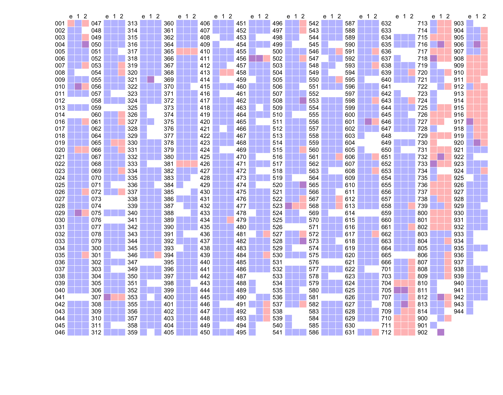
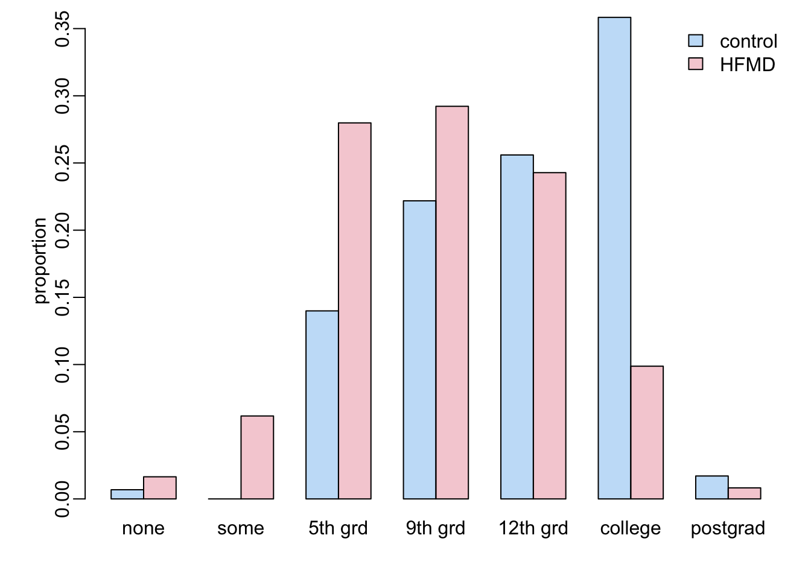
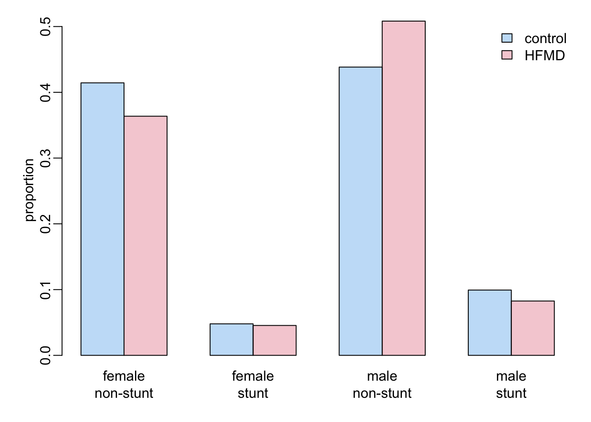

root <- "~/Library/CloudStorage/OneDrive-OxfordUniversityClinicalResearchUnit/"
data_folder <- paste0(root, "GitHub/choisy/08RS/")08RS data
1 Global parameters
The path to the data folder on the local computer:
2 Packages
Required packages:
required <- c("readxl", "purrr", "dplyr", "magrittr", "tidyr", "anthro", "twang",
"cobalt", "survey", "tmle")Installing those that are not installed yet:
to_install <- required[! required %in% installed.packages()[,"Package"]]
if (length(to_install)) install.packages(to_install)Loading some packages for interactive use:
library(dplyr)
library(purrr)
library(stringr)
library(tidyr)
library(twang)
library(cobalt)
library(survey)
library(tmle)3 Functions
A tuning of the readxl::read_excel() function:
read_excel2 <- function(file, ...) readxl::read_excel(paste0(data_folder, file), ...)A function that reads all the tabs of an excel file in the data folder data_folder defined above:
read_excel_file <- function(file) {
sheets_names <- readxl::excel_sheets(paste0(data_folder, file))
sheets_names |>
map(~ read_excel2(file, .x)) |>
setNames(sheets_names)
}A function that remove some slots of a list, by names:
remove_slots <- function(lst, slt) {
lst[setdiff(names(lst), slt)]
}A function that extracts some variables of some slots of a list x of data frames:
get_vars <- function(sel, x) {
x |>
magrittr::extract(names(sel)) |>
map2(sel, ~ select(.x, !!!.y))
}The variables in questions are defined in the named list sel of character vectors. The names of this list should be among the names of x and the character vectors of each slots should be among the names of the columns of the data frames in the corresponding slots. A function that patches data values from the data frame patch into the data frame df, using the key variable as a common key between the two data frames:
patch <- function(patch, df, key) {
ref <- df[, key]
sel <- df[[key]] %in% patch[[key]]
tmp <- df[sel, ]
tmp_names <- names(tmp)
tmp <- bind_cols(patch, tmp[, setdiff(tmp_names, names(patch))])[tmp_names]
df[! sel, ] |>
bind_rows(tmp) |>
left_join(x = ref, y = _, by = key)
}A function that renames a column of a data frame:
rename2 <- function(df, newname, oldname) {
df_names <- names(df)
df_names[which(df_names == oldname)] <- newname
setNames(df, df_names)
}A function that splits a data frame into a list of data frames:
split_df <- function(x, n_rows) {
nb_rows <- nrow(x)
split(x, gl(nb_rows %/% n_rows + (nb_rows %% n_rows > 0), n_rows, nb_rows))
}A function that appends a data frame x with n rows of values v:
append_dataframe <- function(x, n = 1, v = 0) {
1:ncol(x) |>
map(~ rep(v, n)) |>
as.data.frame() |>
setNames(names(x)) |>
(\(y) bind_rows(x, y))()
}A function that applies append_dataframe() to the last slot of a list x of data frame so that the number of rows of the data frame in the last slot is equal to the number of rows of the data frame in the first lost:
append_last <- function(x, v = 1) {
nb_slots <- length(x)
nb_rows1 <- nrow(x[[1]])
nb_rows2 <- nrow(x[[nb_slots]])
if (nb_rows2 < nb_rows1) {
x[[nb_slots]] <- append_dataframe(x[[nb_slots]], nb_rows1 - nb_rows2, v)
}
x
}A tuning of the image() function:
image2 <- function(x, y, z, ...) image(x, y, t(z[nrow(z):1, ]), ...)A function that adds a zero y value to both ends of a data frame with two columns x and y:
adding_zero_ys <- function(x) {
x <- as_tibble(x[c("x", "y")])
x <- bind_rows(head(x, 1), x, tail(x, 1))
x$y[c(1, nrow(x))] <- 0
x
}A function that converts a 1-row matrix with columns names into a named vector:
as_vector <- function(x) setNames(as.vector(x), colnames(x))A tuning of the coef() function:
coef2 <- function(x) last(coef(x))A tuning of the confint() function:
confint2 <- function(x) as_vector(last(suppressMessages(confint(x))))A function that retrieve the p value of the last parameter of a model:
get_p <- function(x) last(as.vector(coefficients(summary(x))))A tuning of the svyglm() function:
svyglm2 <- function(formula, data, w) {
data |>
svydesign(ids = ~1, weights = w, data = _) |>
svyglm(formula, design = _)
}4 08RS CRF data
Loading the data from CliRes:
CRF08RS <- read_excel_file("6-11-2024-CTU08RS_Data.xlsx")The names of the data frames in CliRes and in Saras’ code, with definitions:
# CliRes Saras Definition
# ------------------------------------------------------------------
# ENROL data_EN enrollment
# HIST data_HIST history at enrollment
# CONHIST CONHIST contact history at enrollment
# EXAM data_EX symptoms and signs at enrollment
# LAB data_LAB lab results at admission
# NEU data_NEU neurological exam
# DAILY data_Daily daily review
# MED data_MED medications
# DEVSOCSED data_DEV development and socio-economic data
# DISC data_DISC discharge summary
# FUP data_FUP first follow-up day 7-10
# FUP_II data_FUP6m first follow-up month 6
# FUP_III data_FUP18m first follow-up month 18
# NEURO data_NEURO neurological assessment
# ABC data_MABC movement ABC-2The 08RS CRF dictionary:
CRF_dict <- list(
devsocsed = list(MomEdu = c("Never been to school",
"Attended some primary school",
"Completed primary school (5th gr)",
"Completed lower secondary school (9th gr)",
"Completed higher secondary school (12th gr)",
"Completed university/college degree",
"Completed postgraduate degree"),
Toilet = c("Own flush toilet",
"Shared flush toilet",
"Traditional pit toilet",
"Ventilation improved pit toilet",
"No facility/bush/field",
"None of above"),
Water = c("Private tap",
"Public standpipe",
"Bottled water",
"Well in own residence",
"Public well",
"Rain water",
"Spring",
"River/lake/pond", NA,
"None of the above")),
disc = list(GradeHFMD = c("grade 1",
"grade 2a",
"grade 2b(1)",
"grade 2b(2)",
"grade 3",
"grade 4",
"Not Applicable"),
Outcome = c("Full recovery without complication",
"Incomplete recovery",
"Transferred to another hospital",
"Taken home without approval",
"Death",
"Discharged to die")))Selection of variables from the 08RS CRF:
selection08RS <- list(ENROL = c("ParNo", "DateEnrol", "Gender", "DateBirth"),
HIST = c("ParNo", "DateIllness", "DateAdmHTD", "DateAdmHTD",
"DateAdmHosp", "HFMDToday", "HFMDAdmitted"),
EXAM = c("ParNo", "headCircumference", "height", "weigh"),
DEVSOCSED = c("ParNo", "MomEdu", "Toilet", "Refrigerator",
"AirConditioner", "Motorbike", "Water"),
DISC = c("ParNo", "DateDisc", "GradeHFMD", "TreatSepsis",
"Outcome", "Seizure", "Hypertonicity", "LimbPara",
"CNP", "DiapWeak", "Trache", "Nasotube",
"BehaveChange"))5 02EI CRF data
CRF02EI <- read_excel_file("6-11-2024-CTU02EI_Data.xlsx")Selection of variables from the 02EI CRF:
selection02EI <- list(Demo = c("studyCode", "height", "weight"),
Hist = c("studyCode", "IllnessDate"),
Disch = c("studyCode", "seizures", "tracheostomy",
"muscleStength", "limbParalysing", "nerveParalysing"))6 PCR data
PCR <- "03EI-08RS PCR-Seq result.xlsx" |>
read_excel2("08RS") |>
select(ID, `OUCRU RESULT`) |>
mutate(across(ID, as.numeric)) |>
na.exclude()7 MRI data
MRI <- paste0(root, "GitHub/choisy/08RS/part_dataMRIentry_28AUG15_errorcor.csv") |>
readr::read_csv() |>
rename(ID = code) |>
select(ID, Final, Acute) |>
mutate(across(c("Final", "Acute"), ~ .x == "Yes"))What is the difference between Final and Acute?
filter(MRI, Final != Acute)# A tibble: 10 × 3
ID Final Acute
<dbl> <lgl> <lgl>
1 47 TRUE FALSE
2 51 TRUE FALSE
3 550 TRUE FALSE
4 551 TRUE FALSE
5 557 TRUE FALSE
6 575 TRUE FALSE
7 596 TRUE FALSE
8 597 TRUE FALSE
9 599 TRUE FALSE
10 622 TRUE FALSE8 Children data
8.1 08RS, PCR, MRI
The case and control groups:
groups <- c(rep("HFMD", 299), rep("control", 200),
rep("HFMD", 200), rep("control", 299))First recoding of variables:
recoding1 <- function(x) {
x |>
mutate(across(Gender, ~ c("male", "female")[.x]),
across(starts_with("Date"), as.Date),
across(c("Refrigerator", "AirConditioner",
"Motorbike", "TreatSepsis"), ~ .x < 2))
}Second recoding of variables:
recoding2 <- function(x) {
x |>
mutate(across(HFMD, ~ CRF_dict$disc$GradeHFMD[.x]),
across(MomEdu, ~ CRF_dict$devsocsed$MomEdu[.x]),
across(Toilet, ~ CRF_dict$devsocsed$Toilet[.x]),
across(Water, ~ CRF_dict$devsocsed$Water[.x]),
across(Outcome, ~ CRF_dict$disc$Outcome[.x]))
}Selecting and recoding the variables from the 08RS CRF, and assigning to case or control:
children <- selection08RS |>
remove_slots("ABC") |>
get_vars(CRF08RS) |>
reduce(left_join, by = "ParNo") |>
rowwise() |>
mutate(HFMD = max(across(c(HFMDToday, HFMDAdmitted, GradeHFMD)))) |> #takes max grade
ungroup() |>
recoding1() |>
recoding2() |>
mutate(ID = as.numeric(str_remove(ParNo, "^.*-")),
group = groups[ID]) |>
left_join(MRI, "ID") |>
left_join(PCR, "ID") |>
rename(PCR = `OUCRU RESULT`) |>
select(-HFMDToday, -HFMDAdmitted, -GradeHFMD, -ID) |>
select(ParNo, Gender, DateBirth, DateIllness, DateAdmHosp,
DateAdmHTD, DateEnrol, DateDisc, everything()) |>
arrange(ParNo)8.2 Patching 02EI CRF
Conversion of IDs between 02EI and 08RS:
(ID_conv <- tibble(s02EI = paste0("03-0", c(paste0("0", c(1, 3:9)), c("11", "13"))),
s08RS = paste0("03-0", c(43, 52:56, 60, 62, 78, 79))))# A tibble: 10 × 2
s02EI s08RS
<chr> <chr>
1 03-001 03-043
2 03-003 03-052
3 03-004 03-053
4 03-005 03-054
5 03-006 03-055
6 03-007 03-056
7 03-008 03-060
8 03-009 03-062
9 03-011 03-078
10 03-013 03-079Patching the data values from the 02EI CRF:
children <- selection02EI |>
get_vars(CRF02EI) |>
reduce(left_join, by = "studyCode") |>
mutate(across(IllnessDate, as.Date),
across(c("seizures", "tracheostomy", "muscleStength", "limbParalysing",
"nerveParalysing"), ~ .x < 2)) |>
rename(ParNo = studyCode,
weigh = weight,
DateIllness = IllnessDate,
Seizure = seizures,
Trache = tracheostomy,
Hypertonicity = muscleStength,
LimbPara = limbParalysing,
CNP = nerveParalysing) |>
filter(ParNo %in% ID_conv$s02EI) |>
mutate(across(ParNo, ~ unname(with(ID_conv, setNames(s08RS, s02EI))[.x]))) |>
patch(children, "ParNo")8.3 Stunt and waste
children <- children |>
mutate(age = DateEnrol - DateBirth,
z = anthro::anthro_zscores(c(male = 1, female = 2)[Gender],
as.numeric(age),
weight = weigh,
lenhei = height)[c("zlen", "zwfl")]) |>
unnest(z) |>
mutate(stunting = zlen < -2,
wasting = ifelse(zwfl < -3, "severe",
ifelse(zwfl < -2, "moderate", "no"))) |>
select(- zlen, - zwfl)8.4 Missing values
n <- nrow(children)
children |>
select(- group) |>
map_dfr(~ sum(is.na(.x))) |>
pivot_longer(! ParNo, names_to = "variable", values_to = "number_of_NA") |>
mutate(percentage_of_NA = round(100 * number_of_NA / n)) |>
select(- ParNo) |>
print(n = Inf)# A tibble: 33 × 3
variable number_of_NA percentage_of_NA
<chr> <int> <dbl>
1 Gender 0 0
2 DateBirth 0 0
3 DateIllness 294 55
4 DateAdmHosp 533 99
5 DateAdmHTD 299 56
6 DateEnrol 0 0
7 DateDisc 303 56
8 headCircumference 137 26
9 height 117 22
10 weigh 115 21
11 MomEdu 1 0
12 Toilet 1 0
13 Refrigerator 0 0
14 AirConditioner 0 0
15 Motorbike 0 0
16 Water 0 0
17 TreatSepsis 313 58
18 Outcome 303 56
19 Seizure 294 55
20 Hypertonicity 294 55
21 LimbPara 294 55
22 CNP 294 55
23 DiapWeak 303 56
24 Trache 294 55
25 Nasotube 303 56
26 BehaveChange 303 56
27 HFMD 310 58
28 Final 449 84
29 Acute 449 84
30 PCR 295 55
31 age 0 0
32 stunting 117 22
33 wasting 118 229 M-ABC data
ABC <- CRF08RS$ABC |>
select(ParNo, DateTested, ends_with("ISS")) |>
mutate(across(starts_with("Date"), as.Date)) |>
arrange(ParNo, DateTested)Of note, here
MDstands for manual dexterity,ACstands for aiming and catching andBALstands for balance.
ABC |>
na.exclude()# A tibble: 221 × 10
ParNo DateTested MD1ISS MD2ISS MD3ISS AC1ISS AC2ISS BAL1ISS BAL2ISS BAL3ISS
<chr> <date> <dbl> <dbl> <dbl> <dbl> <dbl> <dbl> <dbl> <dbl>
1 03-001 2013-06-21 4 8 0 0 0 0 0 0
2 03-001 2014-12-17 3 10 6 11 6 6 7 1
3 03-001 2015-06-30 5 12 1 9 10 3 1 1
4 03-003 2015-01-15 11 14 13 12 14 14 13 12
5 03-004 2015-01-20 14 16 1 9 6 7 7 6
6 03-007 2015-02-02 9 10 5 8 12 10 11 6
7 03-010 2014-03-20 6 11 1 7 11 6 13 6
8 03-010 2015-03-20 12 12 6 11 12 8 13 4
9 03-016 2015-04-07 8 14 12 12 12 9 13 5
10 03-020 2014-06-24 11 13 10 12 11 9 13 12
# ℹ 211 more rows10 Bayley data
Loading the data from CliRes:
Bayley0 <- read_excel_file("12-9-2025-Bayley_v3_P1_Data.xlsx")The tabs that we are interested in are the following:
- CS: cognitive scale
- RC: receptive communication (language scale)
- EC: expressive communication (language scale)
- FM: fine motor (motor scale)
- GM: gross motor (motor scale)
Bayley_tabs <- c("CS", "RC", "EC", "FM", "GM")Let’s generate the data frame from these tabs:
common_variables1 <- c("PARNO", "DATETESTED")
common_variables2 <- c(common_variables1, "SCALESCORE")
Bayley<- Bayley_tabs |>
map(~ c(common_variables2, .x)) |>
setNames(Bayley_tabs) |>
get_vars(Bayley0) |>
map2(paste0("SCALESCORE_", Bayley_tabs), rename2, "SCALESCORE") |>
reduce(left_join, by = c("PARNO", "DATETESTED")) |>
mutate(across(starts_with("DATE"), as.Date)) |>
rename(ParNo = PARNO) |>
mutate(across(ParNo, ~ stringr::str_remove(.x, "08RS_")))11 Saras’ CSV file
saras <- readr::read_csv(paste0(root, "GitHub/choisy/08RS/complete data including all withdrawals_updated26_3_21.csv"))select(saras, waste, visitM, ddifENB, ddifEN, FUP, FUP1)# A tibble: 1,408 × 6
waste visitM ddifENB ddifEN FUP FUP1
<chr> <dbl> <dbl> <dbl> <chr> <chr>
1 Not Wasted 2 NA 547 18m 18m
2 Not Wasted NA 184 NA 6m <NA>
3 Not Wasted 1 NA 3 ENROL ENROL
4 Not Wasted 2 NA 547 18m 18m
5 Not Wasted 1 182 182 6m 6m
6 Not Wasted NA 11 NA ENROL <NA>
7 Not Wasted NA 567 NA 18m <NA>
8 Not Wasted NA 204 NA 6m <NA>
9 Not Wasted NA 14 NA ENROL <NA>
10 Not Wasted NA 16 NA prem <NA>
# ℹ 1,398 more rowstable(saras$waste)
Not Wasted Waste
1350 43 12 Time points
A function that generates the time points:
make_time_points <- function(x) {
children |>
select(ParNo, DateEnrol, DateDisc) |>
left_join(x, "ParNo") |>
mutate(time_diff = DateTested - DateEnrol,
time1 = 0, time2 = 6, time3 = 18, # in months
across(c(time1, time2, time3), ~ as.numeric(abs(time_diff - 30 * .x)))) |>
rowwise() |>
mutate(min_delay = min(across(c(time1, time2, time3)))) |>
ungroup() |>
mutate(time_point = ifelse(min_delay == time1,
"enrollment", ifelse(min_delay == time2,
"6 months", "18 months")))
}A function that gets the IDs of children with duplicated assessments:
get_IDs_with_duplicated <- function(x) {
x |>
filter(! is.na(time_point)) |>
group_by(ParNo) |>
group_modify(~ .x |>
group_by(time_point) |>
tally()) |>
ungroup() |>
filter(n > 1) |>
pull(ParNo) |>
unique()
}A function that uses the previous two to generate the data with duplicated assessments:
show_duplicated_assessments <- function(x) {
data_with_time_points <- make_time_points(x)
IDs_with_duplicates <- get_IDs_with_duplicated(data_with_time_points)
filter(data_with_time_points, ParNo %in% IDs_with_duplicates)
}12.1 M-ABC data
ABC |>
show_duplicated_assessments() |>
writexl::write_xlsx("M-ABC2.xlsx")Here all the duplicates are complete. We’ll simply keep all the earlier ones:
ABC2 <- ABC |>
make_time_points() |>
arrange(ParNo, time_point, min_delay) |>
group_by(ParNo, time_point) |>
group_modify(~ head(.x, 1)) |>
ungroup() |>
select(-DateEnrol, -DateDisc, -min_delay, - time_diff, -time1, -time2, -time3) |>
rename(Date_ABC = DateTested)12.2 Bayley data
Bayley <- rename(Bayley, DateTested = DATETESTED)
Bayley |>
show_duplicated_assessments() |>
writexl::write_xlsx("Bayley2.xlsx")This shows that
- there is one and only one complete measurement per time point
- the complete measurement is always the earlier one, except for patient
03-514
In consequence, we decide to simply filter out all the incomplete duplicates:
Bayley2 <- Bayley |>
make_time_points() |>
group_by(ParNo, time_point) |>
group_modify(~ {if (nrow(.x) > 1) return(na.exclude(.x)); .x }) |>
ungroup() |>
select(-DateEnrol, -DateDisc, -min_delay, - time_diff, -time1, -time2, -time3) |>
rename(Date_Bayley = DateTested)12.3 Merging
Merging the M-ABC and Bayley data:
followups <- full_join(ABC2, Bayley2, c("ParNo", "time_point"))12.4 Visualization
A function that prepend all the data frames of a list x of data frames with n columns of the v values:
prepend_white <- function(x, n, v) {
nbrows <- nrow(x[[1]])
white_space <- v |>
rep(n * nbrows) |>
matrix(nbrows) |>
as.data.frame()
map(x, ~ cbind(white_space, .x))
}A function that (i) splits the data frame x into a list of data frame of n rows (except possibly for the last slot), (ii) prepends each of these data frames with wc columns of 1s, and (iii) concatenate all these data frames side by side into a matrix:
side_by_side <- function(x, n, wc) {
x |>
select(-ParNo) |>
split_df(n) |>
append_last() |>
prepend_white(wc, 1) |>
reduce(cbind) |>
as.matrix()
}A tuning of image2():
image3 <- function(x, col_no, col_yes) {
image2(0:ncol(x), 0:nrow(x), x, axes = FALSE, ann = FALSE, col = c(col_no, col_yes))
}The function that plots the heatmap:
heatmap2 <- function(x, nbrow = 45, nb_wc = 2,
col_Bayley = adjustcolor("red", .3),
col_ABC = adjustcolor("blue", .3),
col_NA = adjustcolor("white", 0),
col_lines = "white") {
# plotting M-ABC data:
tmp <- x |>
select(-Date_Bayley) |>
pivot_wider(names_from = time_point, values_from = Date_ABC) |>
side_by_side(nbrow, nb_wc)
image3(tmp, col_NA, col_Bayley)
# adding Bayley data:
par(new = TRUE)
x |>
select(-Date_ABC) |>
pivot_wider(names_from = time_point, values_from = Date_Bayley) |>
side_by_side(nbrow, nb_wc) |>
image3(col_NA, col_ABC)
# adding separation lines:
abline(v = 0:ncol(tmp), col = col_lines)
abline(h = 0:nbrow, col = col_lines)
# adding children IDs:
ids <- str_remove(unique(x$ParNo), "^.*-")
sel <- 1:length(ids)
by <- 3 + nb_wc
ncol_tmp <- ncol(tmp)
nbcol <- ncol_tmp / by
xs <- rep(seq(1, ncol_tmp, by), each = nbrow)[sel]
ys <- rep(rev(1:nbrow - .5), nbcol)[sel]
text(xs, ys, ids)
# adding time points:
xx <- seq(1 + nb_wc, ncol_tmp, by) - .5
mtext(rep(c("e", "1", "2"), nbcol)[sel], at = sort(c(xx, xx + 1, xx + 2)))
}An overview of the M-ABC and Bayley data for all the children and the 3 time points:
expand_grid(ParNo = unique(followups$ParNo),
time_point = c("enrollment", "6 months", "18 months")) |>
left_join(followups, c("ParNo", "time_point")) |>
select(ParNo, time_point, starts_with("Date")) |>
mutate(across(starts_with("Date"), ~ as.numeric(! is.na(.x)) + 1)) |>
heatmap2()
where blue is where the Bayley data are available, red is where the M-ABC data are available, purple is where both data are available and white is where none of the data are available.
13 Analysis
13.1 HFMD vs controls
From here we work with 2 data frames: children that contains the children information, and followups that contains the follow-up data. Note that height and weight (and consequently stunting) is missing for about 22% of children:
children |>
select(group, age, MomEdu, Gender, stunting) |>
map_int(~ sum(is.na(.x))) group age MomEdu Gender stunting
0 0 1 0 117 Some common code:
cols <- c(2, 4)
adjcol <- function(...) adjustcolor(..., alpha = .3)
barplot2 <- function(height, x) {
barplot(height, names.arg = x, beside = TRUE, ylab = "proportion",
col = adjcol(rev(cols)))
}
add_legend <- function(where = "topright") {
legend(where, legend = c("control", "HFMD"), fill = adjcol(rev(cols)), bty = "n")
}Let’s look at the age distribution of the controls and HFMD cases:
tmp <- children |>
mutate(across(age, ~ as.numeric(.x) / 30)) |>
group_by(group) |>
group_map(~ .x |> pull(age) |> density(from = 0))
tmp |>
map(~ .x |> unclass() |> magrittr::extract(c("x", "y")) |> as_tibble()) |>
bind_rows() |>
map(range) |>
with(plot(NA, xlim = x, ylim = y, xlab = "age (months)", ylab = "density"))
tmp |>
walk2(cols, ~ polygon(adding_zero_ys(.x), col = adjcol(.y), border = NA))
add_legend()
Let’s now look at the level of the mother’s education:
edu_order <- c("Never been to school", "Attended some primary school",
"Completed primary school (5th gr)",
"Completed lower secondary school (9th gr)",
"Completed higher secondary school (12th gr)",
"Completed university/college degree", "Completed postgraduate degree")
children |>
with(table(MomEdu, group)) |>
prop.table(2) %>%
`[`(edu_order, ) |>
t() |>
barplot2(c("none", "some", "5th grd", "9th grd", "12th grd", "college", "postgrad"))
add_legend()
Stunt and gender:
children |>
select(group, Gender, stunting) |>
na.exclude() |>
group_by(group) |>
group_split() |>
map(~ .x |> group_by(Gender, stunting) |> tally() |> ungroup()) |>
reduce(left_join, c("Gender", "stunting")) |>
select(starts_with("n")) |>
as.matrix() |>
prop.table(2) |>
t() %>%
`[`(2:1, ) |>
barplot2(rep(c("female", "male"), each = 2))
mtext(rep(c("non-stunt", "stunt"), 2), 1, 1.5, at = c(2, 5, 8, 11))
add_legend()
13.2 Propensity scores
The covariates:
covariables <- select(children, ParNo, Gender, age, MomEdu, stunting, group)The formula:
ps_formula <- group ~ Gender + age + MomEdu + stuntingA function that generates a data set for a given response variable at a given time point:
make_data <- function(response, timepoint) {
followups |>
filter(time_point == timepoint) |>
select(ParNo, all_of(response)) |>
na.exclude() |>
left_join(covariables, "ParNo") |>
select(-ParNo) |>
select(all_of(response), group, everything()) |>
na.exclude()
}A function that generates weights from a logistic regression:
logistic_ps <- function(data) {
data |>
mutate(across(group, ~ .x == "HFMD")) |>
glm(ps_formula, binomial, data = _) |>
predict(type = "response")
}A function that generates weights from the twang package:
twang_ps <- function(data, ...) {
data |>
mutate(across(group, ~ as.integer(group == "HFMD")),
across(where(~ is.character(.x) | is.logical(.x)), as.factor),
across(age, as.numeric)) |>
as.data.frame() |>
ps(ps_formula, data = _, estimand = "ATT", stop.method = "es.mean",
verbose = FALSE, ...) |>
get.weights("es.mean")
}A function that computes balance statistics for diagnostic of the propensity scores:
bal_tab <- function(data, w) {
data |>
mutate(across(group, ~ .x == "HFMD")) |>
bal.tab(ps_formula, data = _, weights = w, s.d.denom = "treated", un = TRUE)
}A function that retrieve the balance adjustments for diagnostic of the propensity scores:
get_diff <- function(x) x$Balance$Diff.AdjA function that produce the maximum values of the balance adjustments for diagnostic of the propensity scores:
get_max_diff <- function(data, w) {
data |>
bal_tab(w) |>
get_diff() |>
max()
}A function that generate the formula of the model with the response y:
reformulate2 <- function(y) {
reformulate(c("Gender", "age", "MomEdu", "stunting", "group"), y)
}The pipeline (takes 52”):
lr_ps <- expand_grid(response = c("MD1ISS", "MD2ISS", "MD3ISS", "AC1ISS", "AC2ISS",
"BAL1ISS", "BAL2ISS", "BAL3ISS",
"CS", "RC", "EC", "FM", "GM"),
timepoint = c("enrollment", "6 months", "18 months")) |>
mutate(dataset = map2(response, timepoint, ~ make_data(.x, .y)),
ctable = map(dataset, ~ as.vector(table(.x$group)))) |>
filter(map_lgl(ctable, ~ length(.x) > 1)) |>
mutate(ctable = map(ctable, ~ setNames(.x, c("control", "HFMD")))) |>
unnest_wider(ctable) |>
filter(HFMD > 3) |>
mutate(dataset = map(dataset,
~ mutate(.x, ps = logistic_ps(pick(everything())),
ow = ifelse(group == "HFMD", 1 - ps, ps), # log reg
tw = twang_ps(pick(everything())), # twang 1
t2 = twang_ps(pick(everything()), # twang 2
n.trees = 5000,
interaction.depth = 2))),
mdifow = map_dbl(dataset, get_max_diff, "ow"),
mdiftw = map_dbl(dataset, get_max_diff, "tw"),
mdift2 = map_dbl(dataset, get_max_diff, "t2"),
formula = map(response, ~ reformulate("group", .x)),
glm0 = map2(formula, dataset, ~ glm(.x, data = .y)),
glm1 = map2(response, dataset, ~ glm(reformulate2(.x), data = .y)),
m_ow = map2(formula, dataset, ~ svyglm2(.x, .y, ~ow)),
m_tw = map2(formula, dataset, ~ svyglm2(.x, .y, ~tw)),
m_t2 = map2(formula, dataset, ~ svyglm2(.x, .y, ~t2)),
# 1 - logistic regression without any covariate:
cf_l0 = map_dbl(glm0, coef2),
ci = map(glm0, confint2)) |>
unnest_wider(ci) |>
rename_with(~ paste0(.x, "l0"), ends_with("%")) |>
mutate(p_l0 = map_dbl(glm0, get_p),
# 2 - logistic regression with covariates:
cf_l1 = map_dbl(glm1, coef2),
ci = map(glm1, confint2)) |>
unnest_wider(ci) |>
rename_with(~ paste0(.x, "l1"), ends_with("%")) |>
mutate(p_l1 = map_dbl(glm1, get_p),
# 3 - weights calculated from a logistic regression:
cf_ow = map_dbl(m_ow, coef2),
ci = map(m_ow, confint2)) |>
unnest_wider(ci) |>
rename_with(~ paste0(.x, "ow"), ends_with("%")) |>
mutate(p_ow = map_dbl(m_ow, get_p),
# 4 - weights calculated from TWANG with default parameters:
cf_tw = map_dbl(m_tw, coef2),
ci = map(m_tw, confint2)) |>
unnest_wider(ci) |>
rename_with(~ paste0(.x, "tw"), ends_with("%")) |>
mutate(p_tw = map_dbl(m_tw, get_p),
# 5 - weights calculated from TWANG with Saras' parameters:
cf_t2 = map_dbl(m_t2, coef2),
ci = map(m_t2, confint2)) |>
unnest_wider(ci) |>
rename_with(~ paste0(.x, "t2"), ends_with("%")) |>
mutate(p_t2 = map_dbl(m_t2, get_p))13.3 TMLE
tmle2 <- function(data, response, family = "gaussian",
Qlib = c("SL.glm", "SL.glmnet", "SL.mean", "SL.gam"),
glib = c("SL.glm", "SL.glmnet", "SL.mean", "SL.gam"), ...) {
out <- data |>
select(Gender, age, MomEdu, stunting) |>
mutate(across(where(~ is.character(.x) | is.logical(.x)), as.factor),
across(age, as.numeric)) |>
tmle(data[[response]], as.integer(data$group == "HFMD"), W = _, family = family,
Q.SL.library = Qlib, g.SL.library = glib)
unlist(out$estimates$ATT[c("psi", "CI", "pvalue")])
}
tmle2(make_data("FM", "enrollment"), "FM") psi CI1 CI2 pvalue
-1.71308010 -3.19272660 -0.23343360 0.02325775